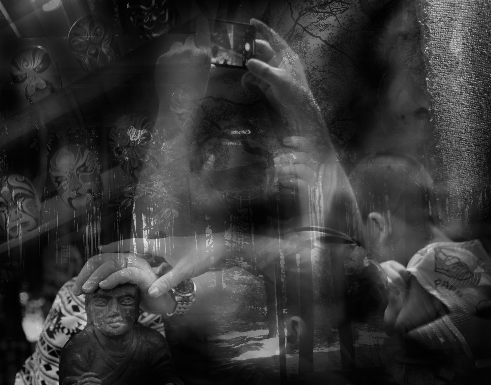
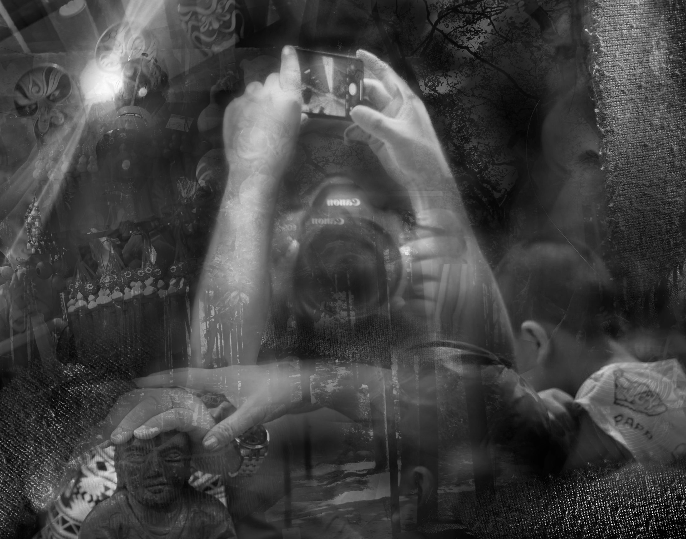
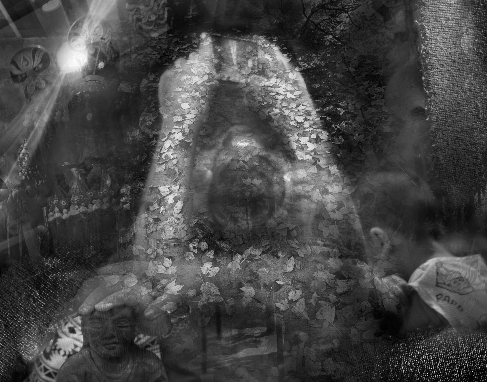

01 / Digital composition
Testing image relationships.
I used Adobe Photoshop to test layouts and combine original photos into different digital compositions. This phase explored contrast, layering, rhythm, and how separate images could create a new structure together.
Testing layout, rhythm, and image relationships in Photoshop.

